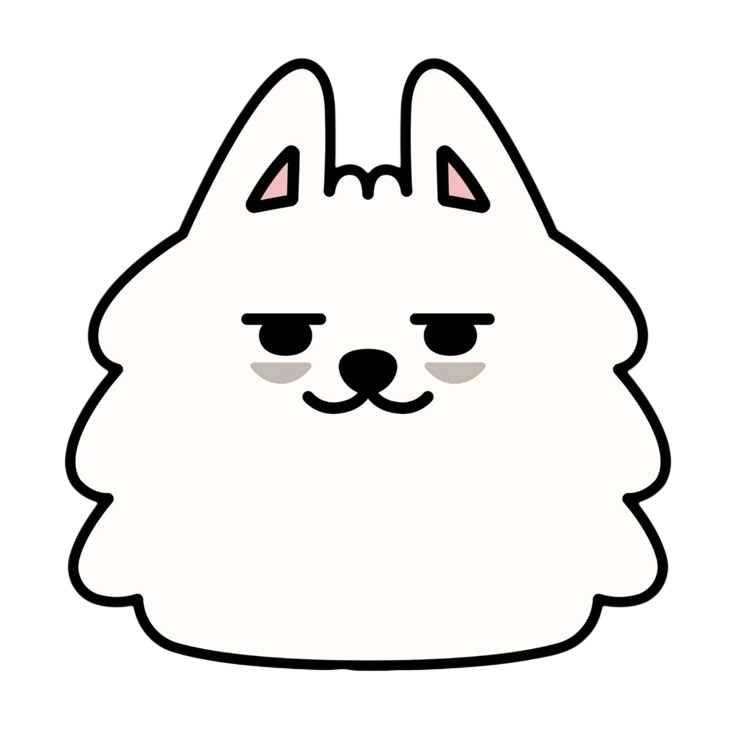
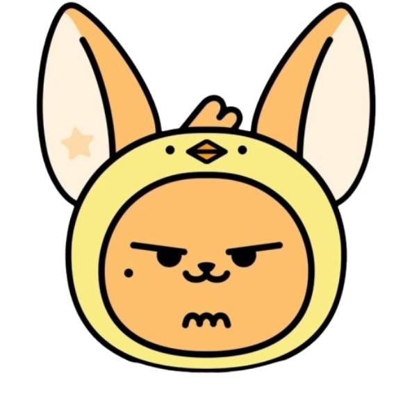
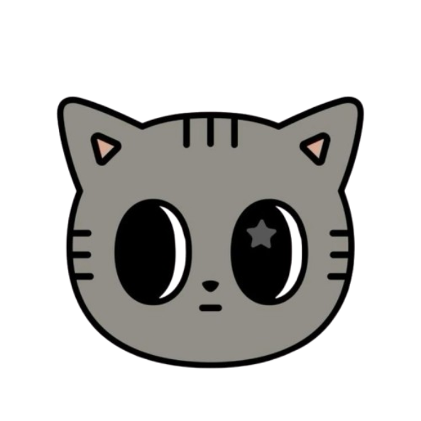
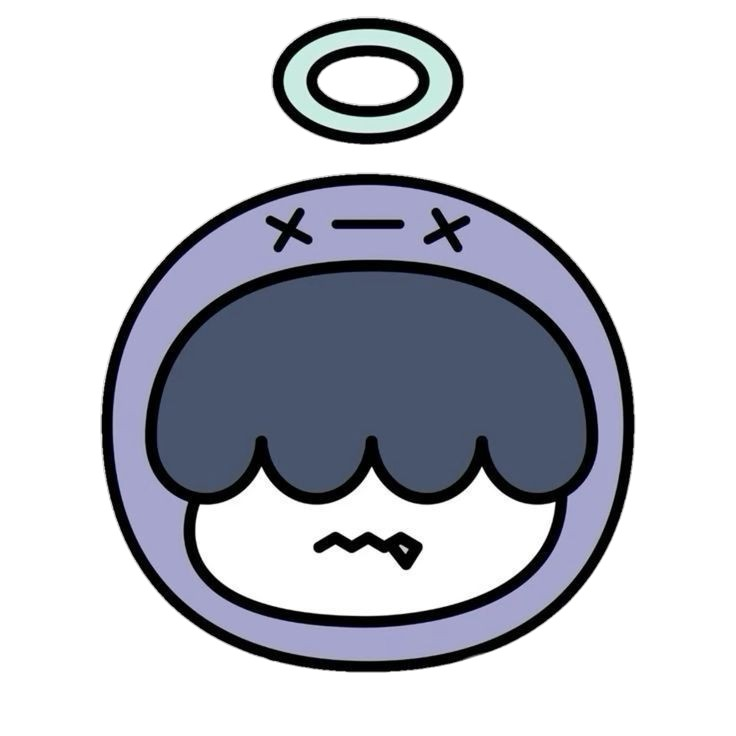
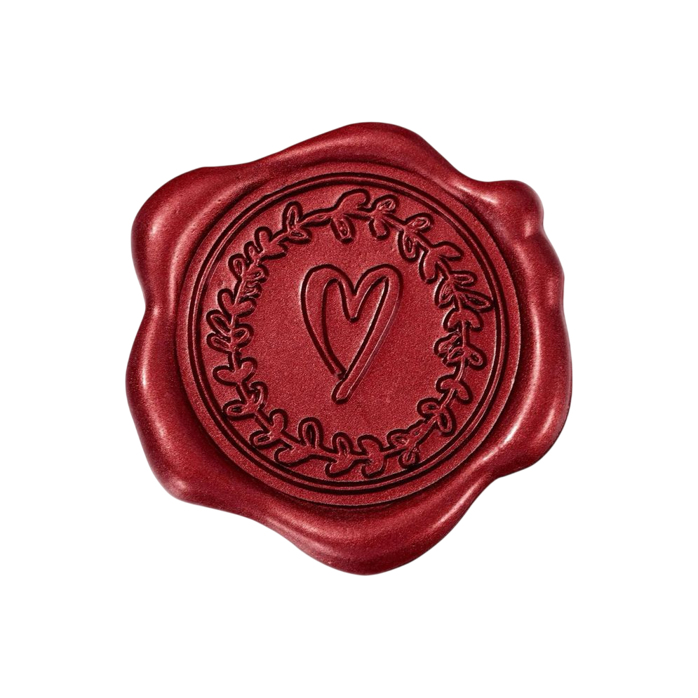

Baja un poco el volumen 🧙♂️👻👻👻
🎵 Over the Moon
🔈
✦
✦
✦
✦

✉ toca para abrir
Baja un poco el volumen 🧙♂️👻👻👻
🎵 Over the Moon
🔈
Han pasado 8 meses desde que tú y yo somos novios Y quisiera decirte que todo ha sido hermoso en la vida contigo a mi lado, alado tuyo la vida se llena de color y realmente quiero agradecerte por dejarme entrar a tu vida, sé que tal vez no sea perfecto en esto y cometa errores, pero realmente quiero estar el resto de mi vida contigo, eres la persona que quiero a mi lado. Tal vez esto solo sea un amor adolescente o algo así pero sinceramente no quiero que se acabe para nada, quiero estar contigo todo el tiempo, todos los días sin importar que. Solo con sentirte a lado mío logras que todos los problemas y el ruido desaparezca y solo quedemos tú y yo, lo que es realmente hermoso, en realidad no se bien expresar todo lo que siento por ti pero quiero que sepas que todo esto es más que real, quiero estar contigo el resto de mis días
1 / 2
22/junio/2026
Enamorarme de a sido lo mas sencillo que eh hecho en mi vida, cuando estoy contigo no me importa nada mas que tu, tus sentimientos, tu risa, tu linda cara lo lindo que se hace la vida a lado tuyo. La pasión que siento por ti es tan grande que a veces puedo ser intenso y no me importa nada más, solo quiero expresarme, solo quiero que entiendas que te amo. Enamorarme de ti es como si el fuego de nuestros corazones se fusionen y solo se haga uno, el fuego del amor. Siempre que estoy contigo no me importa nada el resto de la gente, solo quiero que la intensidad del fuego que esta en mi pecho me consuma y que nos atrape entre sus brasas y nos envuelvan en un respirar de intensidad, la misma intensidad de mi amor por ti.
2 / 2